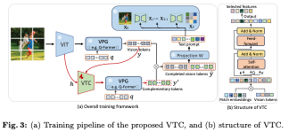
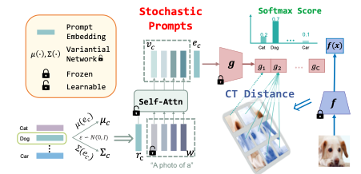

Publications
(Full list on Google Scholar. * indicates equal contribution, and # indicates corresponding author.)
2025
2024


Patch-Prompt Aligned Bayesian Prompt Tuning for Vision-Language Models
Xinyang Liu*,
Dongsheng Wang*, Fangbo Wei,
Miaoge Li,
Yishi Xu,
Zhibin Duan,
Bo Chen#,
Mingyuan Zhou